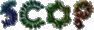

We gratefully acknowledge the following groups and projects for their
freely-distributable contributions to the community. Unison is released
under an Open Source license; please see Unison
legal information for details.
| Data in Unison |
|---|
Ensembl
|
Ensembl 2005
T. Hubbard, et al.
Nucleic Acids Res. 33:D447-D453 (Database Issue) (2005). [Full Text]
Freely available [License]
|
GeneOntology.org
|
Gene Ontology: tool for the unification of biology.
The Gene Ontology Consortium
Nature Genet. 25: 25-29 (2000). [PDF]
Freely available [License]
|
MINT
|
MINT: a Molecular INTeraction database
Zanzoni A, Montecchi-Palazzi L, Quondam M, Ausiello G, Helmer-Citterich M, Cesareni G
FEBS Lett. 513: 135-140 (2002) [PubMed]
Freely available for research [License]
|

NCBI
for BLAST, RefSeq, and other data
|
Basic local alignment search tool.
Altschul, S.F., Gish, W., Miller, W., Myers, E.W. & Lipman, D.J.
J. Mol. Biol. 215:403-410 (1990). [PubMed]
NCBI Reference Sequence (RefSeq): a curated non-redundant sequence database of genomes, transcripts and proteins
Pruitt, K.D., Tatusova, T., and Maglott, D.R.
Nucl. Acids Res. 33:D501-D504 (2005).
Public domain
|
PDB |
The Protein Data Bank (PDB)
H.M.Berman, J.Westbrook, Z.Feng, G.Gilliland, T.N.Bhat, H.Weissig, I.N.Shindyalov, P.E.Bourne
Nucleic Acids Res. 28: 235-242 (2000) [PubMed]
Public domain
|
|
Pfam
|
The Pfam Protein Families Database
Alex Bateman, Lachlan Coin, Richard Durbin, Robert D. Finn, Volker Hollich, Sam Griffiths-Jones, Ajay Khanna, Mhairi Marshall, Simon Moxon, Erik L. L. Sonnhammer, David J. Studholme, Corin Yeats and Sean R. Eddy
Nucleic Acids Research Database Issue 32:D138-D141 (2004). [PubMed]
Freely available [License (GPL)]
|

SCOP - Structural Classifcation of Proteins
|
Andreeva A., Howorth D., Brenner S.E., Hubbard T.J.P., Chothia C., Murzin A.G.
SCOP database in 2004: refinements integrate structure and sequence family data.
Nucleic Acid Res. 32:D226-D229 (2004). [PDF]
Freely available without license after July 1, 2004 [License]
|
UniProt |
The Universal Protein Resource (UniProt)
Bairoch A, Apweiler R, Wu CH, Barker WC, Boeckmann B, Ferro S, Gasteiger E, Huang H, Lopez R, Magrane M, Martin MJ, Natale DA, O'Donovan C, Redaschi N, Yeh LS
Nucleic Acids Res. 33: D154-159 (2005). [PubMed]
Freely distributable after Jan 1, 2005 [License]
|
| Scientific Software used by Unison |
|---|
|
BioPerl
|
The Bioperl toolkit: Perl modules for the life sciences.
Stajich JE, Block D, Boulez K, Brenner SE, Chervitz SA, Dagdigian C, Fuellen G, Gilbert JG, Korf I, Lapp H, Lehvaslaiho H, Matsalla C, Mungall CJ, Osborne BI, Pocock MR, Schattner P, Senger M, Stein LD, Stupka E, Wilkinson MD, Birney E.
Genome Res. Oct;12(10):1611-8 (2002). [PubMed]
Freely available [License (Artistic)]
|
EMBOSS
|
EMBOSS: The European Molecular Biology Open Software Suite
Rice,P. Longden,I. and Bleasby,A.
Trends in Genetics 16(6): 276-277 (2000).
Freely available [License (GPL and LGPL)]
|
HMMER
|
Profile Hidden Markov Models.
S. R. Eddy.
Bioinformatics, 14:755-763 (1998). [PDF]
Freely available [License (GPL)]
|
JMol
|
http://jmol.sourcefource.net
Freely available [License (GPL)]
|
|
PSIPred
|
Protein secondary structure prediction based on position-specific scoring matrices.
Jones, D.T.
J. Mol. Biol. 292:195-202 (1999).
Freely available (Para 8: "...may be made available...if access is granted free of charge...")
|

PyMOL
|
The PyMOL Molecular Graphics System
DeLano, W.L.
http://www.pymol.org (2002).
Freely available [License]
|
| Other Software used by Unison |
|---|
Apache web server
|
Freely available [License (Apache)]
|
GIMP
|
Freely available [License (GPL)
|
GNOME
|
Freely available [License (GPL)
|
GNU/Free Software Foundation tools
|
Free, of course [License (GPL or LGPL)]
|
Linux
|
Freely available [License (GPL)]
|
OpenOffice
|
Varies [License]
|
Perl
|
Freely available [License (Artistic)]
|
PostgreSQL
|
Freely available [License (BSD)]
|
| Support |
|---|
 |
Genentech Corporate site
Genentech Bioinformatics public web pages |